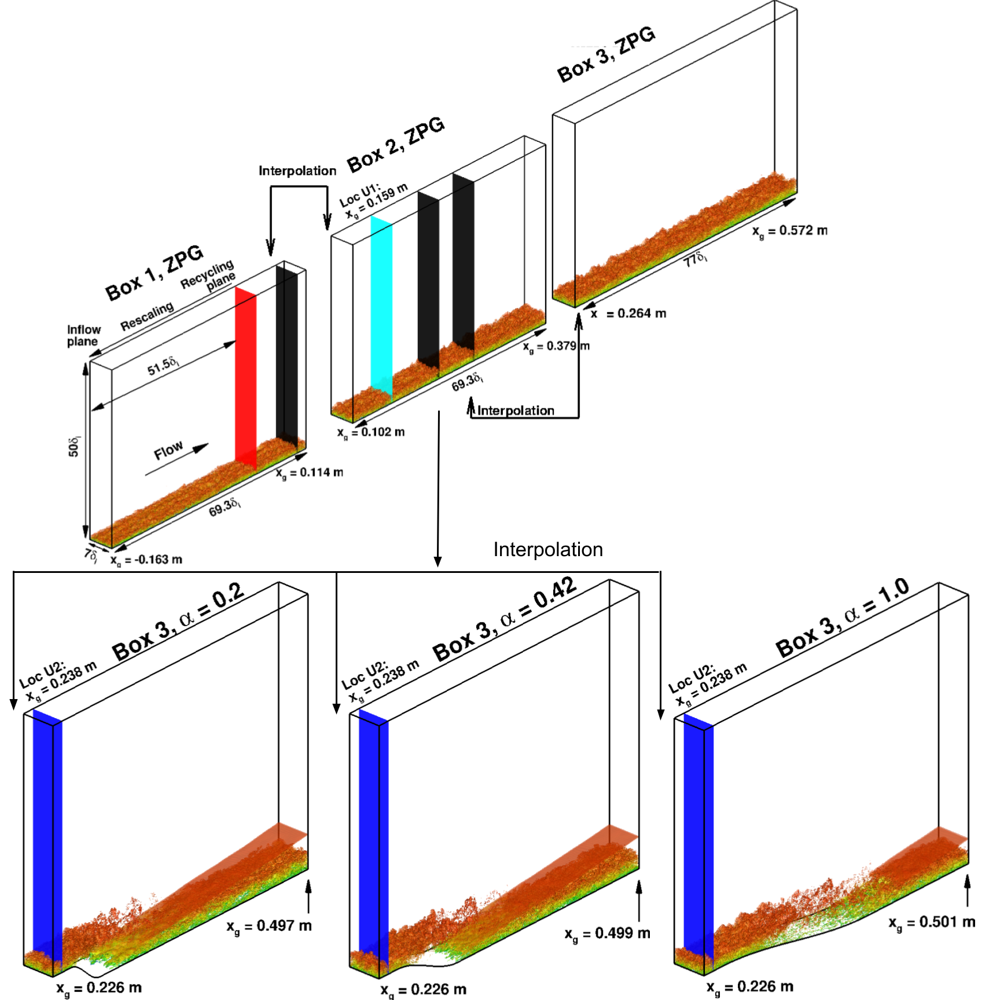
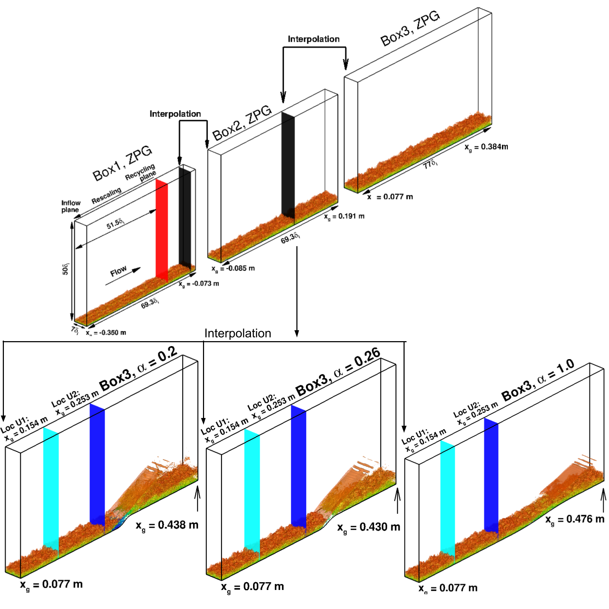
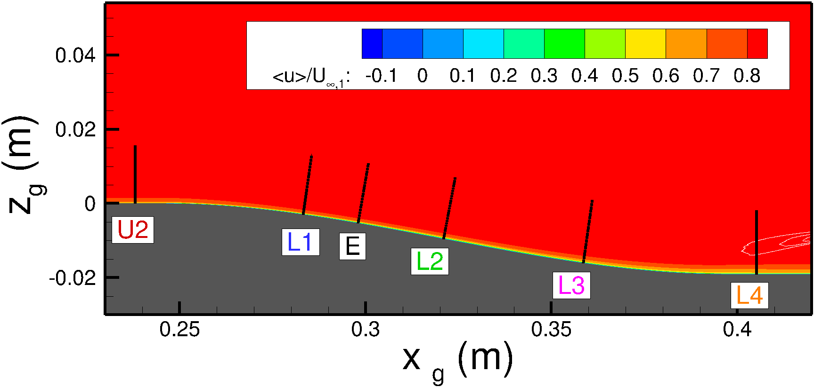
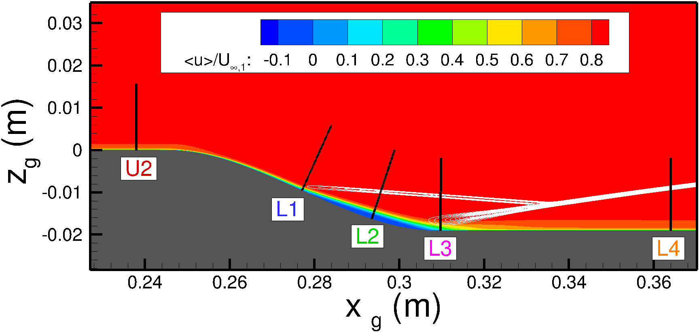
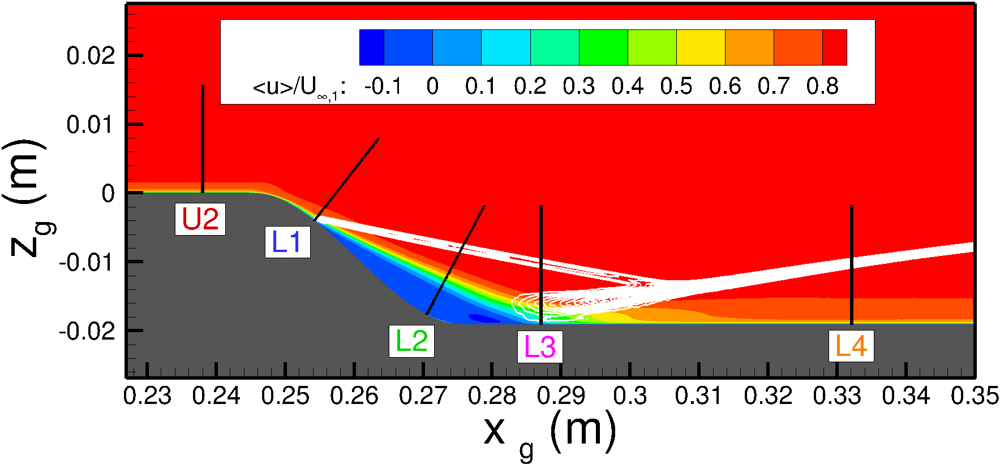
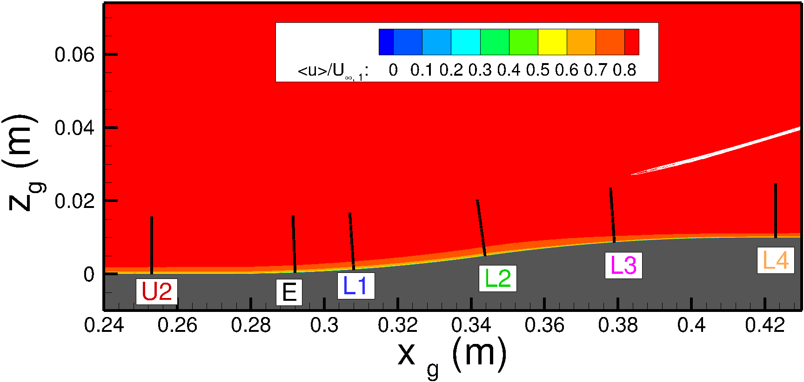
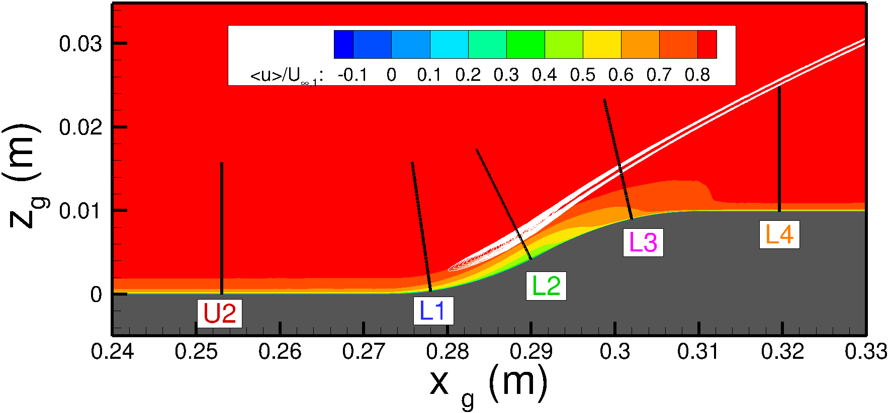
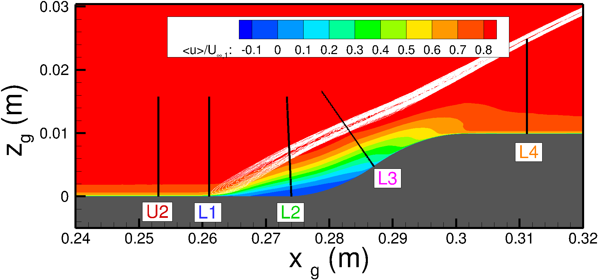

Public Access (formerly Langley Research Center)Turbulence Modeling Resource |
DNS: High-Speed Turbulent Boundary Layers over Parameterized Curved Walls
Return to: Data from DNS - Intro Page
Return to: Turbulence Modeling Resource Home PageThe data on this page were provided by L. Duan.
This study presents a DNS database of high-speed turbulent boundary layers
subject to pressure gradients due to parametrically varied backward-facing and forward-facing wall curvatures, with
an inflow Mach number of 4.9 and an approximate friction Reynolds number of 1000 immediately before the onset of wall
curvature. The Mach and Reynolds numbers are significantly higher than those reported in the literature for the DNS
of pressure-gradient turbulent boundary layers. The flow conditions and baseline
wall geometries are representative of experiments in the
high-speed blowdown wind tunnel at the National Aerothermochemistry Laboratory at Texas A&M University. The
wall steepness of the baseline geometry for both the backward-facing and forward-facing walls was systematically
varied to cause attached, incipiently separated, and fully separated flows. Precomputed flow statistics, including
turbulent kinetic energy budgets, are provided.
These DNS results have been documented in the following publication:








All DNS data in one zipped package:
Return to: Data from DNS - Intro Page
Recent significant updates:
Backward-facing wall, alpha=1.0:
Backward-facing wall, alpha=0.42:
Backward-facing wall, alpha=0.20:
Forward-facing wall, alpha=1.0:
Forward-facing wall, alpha=0.26:
Forward-facing wall, alpha=0.20:
Page Curators: Christopher Rumsey,
Ethan Vogel,
Clark Pederson
Last Updated: 05/20/2024